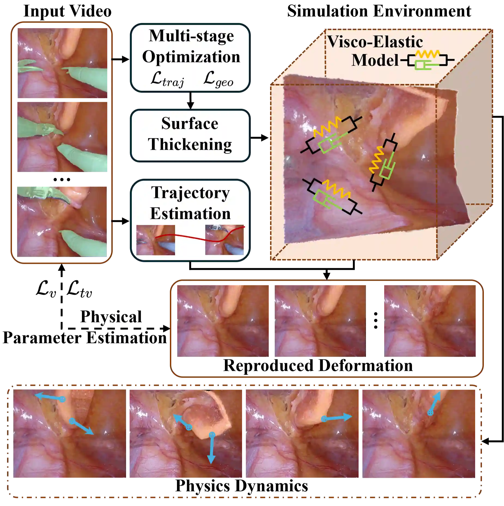
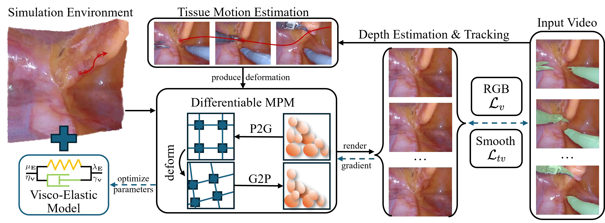

Demo
Abstract
In this paper, we propose SurgiSim, a novel automatic simulation system to overcome these limitations. To build a surgical simulation environment, we maintain a canonical 3D scene composed of 3D Gaussians coupled with a deformation field to represent a dynamic surgical scene. This process involves a multi-stage optimization with trajectory and anisotropic regularization, enhancing the geometry consistency of the canonical scene, which serves as the simulation environment. To achieve realistic physical simulations in this environment, we implement a Visco-Elastic deformation model based on the Maxwell model, effectively restoring the complex deformations of tissues. Additionally, we infer the physical parameters of tissues by minimizing the discrepancies between the input video and simulation results guided by estimated tissue motion, ensuring realistic simulation outcomes.
Method
Given a monocular surgical video, the system constructs a canonical 3D simulation environment using 3D Gaussian Splatting and a multi-stage optimization process. This reconstruction ensures geometric consistency and introduces surface thickening to better serve the need of simulation.
Building upon the reconstructed simulation environment, we incorporate visco-elastic modeling to simulate the complex physical behaviors of surgical tissues with Material Point Method (MPM). We estimate the tissue motion using pixel tracking to drive the simulation, and optimize the physical paramaters by alining the driven simulation with the input video.
Results and Comparisons
This figure demonstrates the superior performance of SurgiSim in simulating realistic tissue dynamics. Unlike baselines that show unnatural oscillations or artifacts, SurgiSim faithfully models tissue deformation and rebound, reflecting real-world surgical behavior. The damping effects of the proposed viscoelastic model ensure tissues return naturally to a stationary state after external forces cease, achieving both visual and physical realism.
This figure highlights the realistic simulation of tissue motion by SurgiSim. The tissue rapidly returns to a stable state after release, replicating real damping effects, while baselines exhibit persistent oscillations due to their inability to model viscoelastic properties. This further validates the effectiveness of SurgiSim in producing realistic tissue behavior.
This figure shows the geometric quality of our reconstruction results, compared with SimEndoGS and EndoGaussian. Our simulation environment achieves the best geometric quality.
Bibtex
If you find this work helpful, you can cite our paper as follows:
@article{Ano2024surgisim,
title={Realistic Surgical Simulation from Monocular Videos},
author={Anonymous},
journal={arXiv preprint arXiv:0000.00000},
year={2024}
}